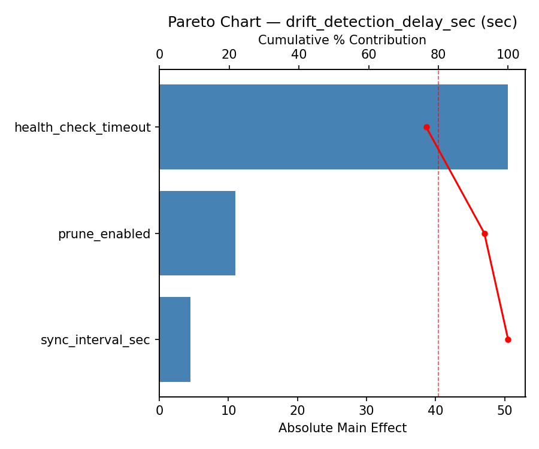
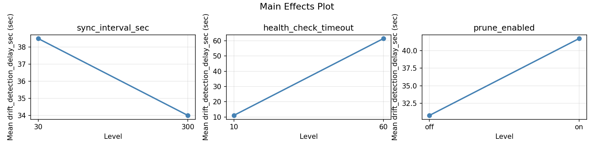
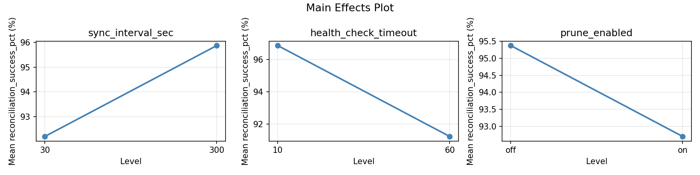
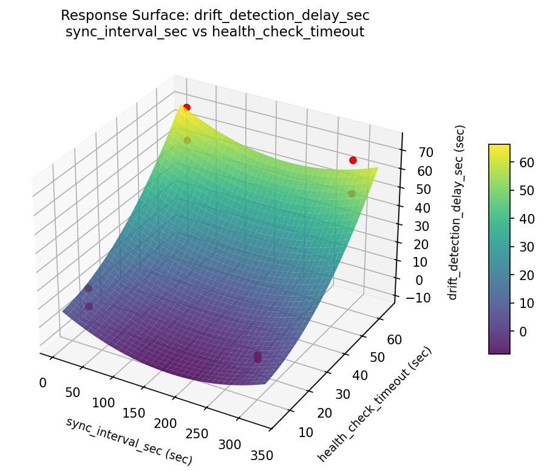
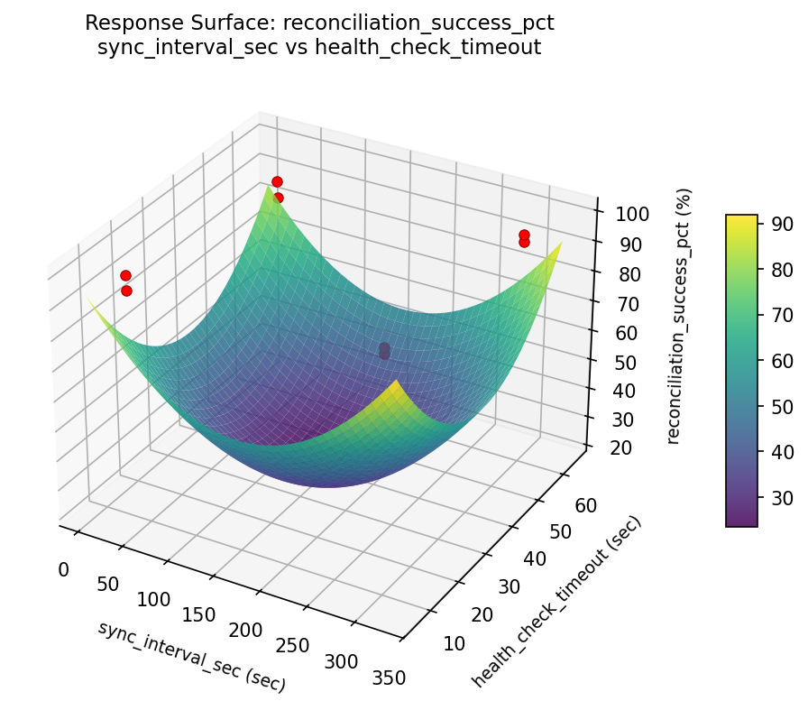

Summary
This experiment investigates gitops sync interval. Full factorial of sync interval, health check timeout, and prune enabled for drift detection and reconciliation.
The design varies 3 factors: sync interval sec (sec), ranging from 30 to 300, health check timeout (sec), ranging from 10 to 60, and prune enabled, ranging from off to on. The goal is to optimize 2 responses: drift detection delay sec (sec) (minimize) and reconciliation success pct (%) (maximize). Fixed conditions held constant across all runs include tool = argocd, cluster count = 3.
A full factorial design was used to explore all 8 possible combinations of the 3 factors at two levels. This guarantees that every main effect and interaction can be estimated independently, at the cost of a larger experiment (8 runs).
Key Findings
For drift detection delay sec, the most influential factors were health check timeout (69.2%), prune enabled (23.1%), sync interval sec (7.7%). The best observed value was 8.0 (at sync interval sec = 30, health check timeout = 60, prune enabled = off).
For reconciliation success pct, the most influential factors were sync interval sec (58.9%), health check timeout (32.7%), prune enabled (8.4%). The best observed value was 98.7 (at sync interval sec = 300, health check timeout = 10, prune enabled = off).
Recommended Next Steps
- Consider whether any fixed factors should be varied in a future study.
Experimental Setup
Factors
| Factor | Low | High | Unit |
|---|
sync_interval_sec | 30 | 300 | sec |
health_check_timeout | 10 | 60 | sec |
prune_enabled | off | on | |
Fixed: tool = argocd, cluster_count = 3
Responses
| Response | Direction | Unit |
|---|
drift_detection_delay_sec | ↓ minimize | sec |
reconciliation_success_pct | ↑ maximize | % |
Configuration
{
"metadata": {
"name": "GitOps Sync Interval",
"description": "Full factorial of sync interval, health check timeout, and prune enabled for drift detection and reconciliation"
},
"factors": [
{
"name": "sync_interval_sec",
"levels": [
"30",
"300"
],
"type": "continuous",
"unit": "sec"
},
{
"name": "health_check_timeout",
"levels": [
"10",
"60"
],
"type": "continuous",
"unit": "sec"
},
{
"name": "prune_enabled",
"levels": [
"off",
"on"
],
"type": "categorical",
"unit": ""
}
],
"fixed_factors": {
"tool": "argocd",
"cluster_count": "3"
},
"responses": [
{
"name": "drift_detection_delay_sec",
"optimize": "minimize",
"unit": "sec"
},
{
"name": "reconciliation_success_pct",
"optimize": "maximize",
"unit": "%"
}
],
"settings": {
"operation": "full_factorial",
"test_script": "use_cases/82_gitops_sync_interval/sim.sh"
}
}
Experimental Matrix
The Full Factorial Design produces 8 runs. Each row is one experiment with specific factor settings.
| Run | sync_interval_sec | health_check_timeout | prune_enabled |
|---|
| 1 | 30 | 60 | on |
| 2 | 300 | 10 | off |
| 3 | 300 | 60 | off |
| 4 | 300 | 60 | on |
| 5 | 30 | 60 | off |
| 6 | 300 | 10 | on |
| 7 | 30 | 10 | off |
| 8 | 30 | 10 | on |
Step-by-Step Workflow
1
Preview the design
$ python doe.py info --config use_cases/82_gitops_sync_interval/config.json
2
Generate the runner script
$ python doe.py generate --config use_cases/82_gitops_sync_interval/config.json \
--output use_cases/82_gitops_sync_interval/results/run.sh --seed 42
3
Execute the experiments
$ bash use_cases/82_gitops_sync_interval/results/run.sh
4
Analyze results
$ python doe.py analyze --config use_cases/82_gitops_sync_interval/config.json
5
Get optimization recommendations
$ python doe.py optimize --config use_cases/82_gitops_sync_interval/config.json
6
Multi-objective optimization
With 2 competing responses, use --multi to find the best compromise via Derringer–Suich desirability.
$ python doe.py optimize --config use_cases/82_gitops_sync_interval/config.json --multi
7
Generate the HTML report
$ python doe.py report --config use_cases/82_gitops_sync_interval/config.json \
--output use_cases/82_gitops_sync_interval/results/report.html
Features Exercised
| Feature | Value |
|---|
| Design type | full_factorial |
| Factor types | continuous (2), categorical (1) |
| Arg style | double-dash |
| Responses | 2 (drift_detection_delay_sec ↓, reconciliation_success_pct ↑) |
| Total runs | 8 |
Analysis Results
Generated from actual experiment runs using the DOE Helper Tool.
Response: drift_detection_delay_sec
Top factors: health_check_timeout (69.2%), prune_enabled (23.1%), sync_interval_sec (7.7%).
ANOVA
| Source | DF | SS | MS | F | p-value |
|---|
| Source | DF | SS | MS | F | p-value |
| sync_interval_sec | 1 | 8.0000 | 8.0000 | 0.005 | 0.9546 |
| health_check_timeout | 1 | 648.0000 | 648.0000 | 0.413 | 0.6363 |
| prune_enabled | 1 | 72.0000 | 72.0000 | 0.046 | 0.8656 |
| sync_interval_sec*health_check_timeout | 1 | 2380.5000 | 2380.5000 | 1.518 | 0.4340 |
| sync_interval_sec*prune_enabled | 1 | 0.5000 | 0.5000 | 0.000 | 0.9886 |
| health_check_timeout*prune_enabled | 1 | 840.5000 | 840.5000 | 0.536 | 0.5977 |
| Error | 1 | 1568.0000 | 1568.0000 | | |
| Total | 7 | 5517.5000 | 788.2143 | | |
Pareto Chart

Main Effects Plot

Response: reconciliation_success_pct
Top factors: sync_interval_sec (58.9%), health_check_timeout (32.7%), prune_enabled (8.4%).
ANOVA
| Source | DF | SS | MS | F | p-value |
|---|
| Source | DF | SS | MS | F | p-value |
| sync_interval_sec | 1 | 4.9613 | 4.9613 | 0.311 | 0.6762 |
| health_check_timeout | 1 | 1.5312 | 1.5312 | 0.096 | 0.8088 |
| prune_enabled | 1 | 0.1012 | 0.1012 | 0.006 | 0.9494 |
| sync_interval_sec*health_check_timeout | 1 | 82.5612 | 82.5612 | 5.173 | 0.2637 |
| sync_interval_sec*prune_enabled | 1 | 7.0312 | 7.0312 | 0.441 | 0.6270 |
| health_check_timeout*prune_enabled | 1 | 16.5312 | 16.5312 | 1.036 | 0.4944 |
| Error | 1 | 15.9612 | 15.9612 | | |
| Total | 7 | 128.6787 | 18.3827 | | |
Pareto Chart

Main Effects Plot

Response Surface Plots
3D surfaces fitted with quadratic RSM. Red dots are observed data points.
drift detection delay sec sync interval sec vs health check timeout

reconciliation success pct sync interval sec vs health check timeout

Multi-Objective Optimization
When responses compete, Derringer–Suich desirability finds the best compromise.
Each response is scaled to a 0–1 desirability, then combined via a weighted geometric mean.
Overall Desirability
D = 0.9545
Per-Response Desirability
| Response | Weight | Desirability | Predicted | Dir |
|---|
drift_detection_delay_sec |
1.0 |
|
8.00 0.9545 8.00 sec |
↓ |
reconciliation_success_pct |
1.5 |
|
98.70 0.9545 98.70 % |
↑ |
Recommended Settings
| Factor | Value |
|---|
sync_interval_sec | 30 sec |
health_check_timeout | 60 sec |
prune_enabled | on |
Source: from observed run #8
Trade-off Summary
Sacrifice = how much worse than single-objective best.
| Response | Predicted | Best Observed | Sacrifice |
|---|
reconciliation_success_pct | 98.70 | 98.70 | +0.00 |
Top 3 Runs by Desirability
| Run | D | Factor Settings |
|---|
| #1 | 0.9419 | sync_interval_sec=300, health_check_timeout=60, prune_enabled=on |
| #7 | 0.8621 | sync_interval_sec=30, health_check_timeout=10, prune_enabled=on |
Model Quality
| Response | R² | Type |
|---|
reconciliation_success_pct | 0.4588 | linear |
Full Multi-Objective Output
============================================================
MULTI-OBJECTIVE OPTIMIZATION
Method: Derringer-Suich Desirability Function
============================================================
Overall desirability: D = 0.9545
Response Weight Desirability Predicted Direction
---------------------------------------------------------------------
drift_detection_delay_sec 1.0 0.9545 8.00 sec ↓
reconciliation_success_pct 1.5 0.9545 98.70 % ↑
Recommended settings:
sync_interval_sec = 30 sec
health_check_timeout = 60 sec
prune_enabled = on
(from observed run #8)
Trade-off summary:
drift_detection_delay_sec: 8.00 (best observed: 8.00, sacrifice: +0.00)
reconciliation_success_pct: 98.70 (best observed: 98.70, sacrifice: +0.00)
Model quality:
drift_detection_delay_sec: R² = 0.2372 (linear)
reconciliation_success_pct: R² = 0.4588 (linear)
Top 3 observed runs by overall desirability:
1. Run #8 (D=0.9545): sync_interval_sec=30, health_check_timeout=60, prune_enabled=on
2. Run #1 (D=0.9419): sync_interval_sec=300, health_check_timeout=60, prune_enabled=on
3. Run #7 (D=0.8621): sync_interval_sec=30, health_check_timeout=10, prune_enabled=on
Full Analysis Output
=== Main Effects: drift_detection_delay_sec ===
Factor Effect Std Error % Contribution
--------------------------------------------------------------
health_check_timeout 18.0000 9.9261 69.2%
prune_enabled -6.0000 9.9261 23.1%
sync_interval_sec -2.0000 9.9261 7.7%
=== ANOVA Table: drift_detection_delay_sec ===
Source DF SS MS F p-value
-----------------------------------------------------------------------------
sync_interval_sec 1 8.0000 8.0000 0.005 0.9546
health_check_timeout 1 648.0000 648.0000 0.413 0.6363
prune_enabled 1 72.0000 72.0000 0.046 0.8656
sync_interval_sec*health_check_timeout 1 2380.5000 2380.5000 1.518 0.4340
sync_interval_sec*prune_enabled 1 0.5000 0.5000 0.000 0.9886
health_check_timeout*prune_enabled 1 840.5000 840.5000 0.536 0.5977
Error 1 1568.0000 1568.0000
Total 7 5517.5000 788.2143
=== Interaction Effects: drift_detection_delay_sec ===
Factor A Factor B Interaction % Contribution
------------------------------------------------------------------------
sync_interval_sec health_check_timeout 34.5000 62.2%
health_check_timeout prune_enabled 20.5000 36.9%
sync_interval_sec prune_enabled 0.5000 0.9%
=== Summary Statistics: drift_detection_delay_sec ===
sync_interval_sec:
Level N Mean Std Min Max
------------------------------------------------------------
30 4 37.2500 29.8147 8.0000 73.0000
300 4 35.2500 30.7828 8.0000 68.0000
health_check_timeout:
Level N Mean Std Min Max
------------------------------------------------------------
10 4 27.2500 30.8045 8.0000 73.0000
60 4 45.2500 25.9663 8.0000 68.0000
prune_enabled:
Level N Mean Std Min Max
------------------------------------------------------------
off 4 39.2500 36.1421 8.0000 73.0000
on 4 33.2500 22.5592 10.0000 55.0000
=== Main Effects: reconciliation_success_pct ===
Factor Effect Std Error % Contribution
--------------------------------------------------------------
sync_interval_sec 1.5750 1.5159 58.9%
health_check_timeout 0.8750 1.5159 32.7%
prune_enabled 0.2250 1.5159 8.4%
=== ANOVA Table: reconciliation_success_pct ===
Source DF SS MS F p-value
-----------------------------------------------------------------------------
sync_interval_sec 1 4.9613 4.9613 0.311 0.6762
health_check_timeout 1 1.5312 1.5312 0.096 0.8088
prune_enabled 1 0.1012 0.1012 0.006 0.9494
sync_interval_sec*health_check_timeout 1 82.5612 82.5612 5.173 0.2637
sync_interval_sec*prune_enabled 1 7.0312 7.0312 0.441 0.6270
health_check_timeout*prune_enabled 1 16.5312 16.5312 1.036 0.4944
Error 1 15.9612 15.9612
Total 7 128.6787 18.3827
=== Interaction Effects: reconciliation_success_pct ===
Factor A Factor B Interaction % Contribution
------------------------------------------------------------------------
sync_interval_sec health_check_timeout -6.4250 57.5%
health_check_timeout prune_enabled -2.8750 25.7%
sync_interval_sec prune_enabled -1.8750 16.8%
=== Summary Statistics: reconciliation_success_pct ===
sync_interval_sec:
Level N Mean Std Min Max
------------------------------------------------------------
30 4 93.2500 5.4830 85.7000 98.7000
300 4 94.8250 3.3430 91.2000 98.4000
health_check_timeout:
Level N Mean Std Min Max
------------------------------------------------------------
10 4 93.6000 5.6480 85.7000 98.4000
60 4 94.4750 3.2377 91.2000 98.7000
prune_enabled:
Level N Mean Std Min Max
------------------------------------------------------------
off 4 93.9250 6.0972 85.7000 98.7000
on 4 94.1500 2.3840 91.2000 96.8000
Optimization Recommendations
=== Optimization: drift_detection_delay_sec ===
Direction: minimize
Best observed run: #1
sync_interval_sec = 30
health_check_timeout = 60
prune_enabled = off
Value: 8.0
RSM Model (linear, R² = 0.1646, Adj R² = -0.4620):
Coefficients:
intercept +36.2500
sync_interval_sec -9.0000
health_check_timeout +5.5000
prune_enabled +1.5000
Predicted optimum (from linear model, at observed points):
sync_interval_sec = 30
health_check_timeout = 60
prune_enabled = on
Predicted value: 52.2500
Surface optimum (via L-BFGS-B, linear model):
sync_interval_sec = 300
health_check_timeout = 10
prune_enabled = off
Predicted value: 20.2500
Model quality: Weak fit — consider adding center points or using a different design.
Factor importance:
1. sync_interval_sec (effect: -18.0, contribution: 56.2%)
2. health_check_timeout (effect: 11.0, contribution: 34.4%)
3. prune_enabled (effect: 3.0, contribution: 9.4%)
=== Optimization: reconciliation_success_pct ===
Direction: maximize
Best observed run: #8
sync_interval_sec = 300
health_check_timeout = 10
prune_enabled = off
Value: 98.7
RSM Model (linear, R² = 0.1441, Adj R² = -0.4978):
Coefficients:
intercept +94.0375
sync_interval_sec -0.3625
health_check_timeout -1.4125
prune_enabled -0.4375
Predicted optimum (from linear model, at observed points):
sync_interval_sec = 30
health_check_timeout = 10
prune_enabled = off
Predicted value: 96.2500
Surface optimum (via L-BFGS-B, linear model):
sync_interval_sec = 30
health_check_timeout = 10
prune_enabled = off
Predicted value: 96.2500
Model quality: Weak fit — consider adding center points or using a different design.
Factor importance:
1. health_check_timeout (effect: -2.8, contribution: 63.8%)
2. prune_enabled (effect: -0.9, contribution: 19.8%)
3. sync_interval_sec (effect: -0.7, contribution: 16.4%)